Префектура Ямагата · Цуруока · где остановиться
SHONAI HOTEL SUIDEN TERRASSE: отель Сигэру Бана среди рисовых полей Цуруоки
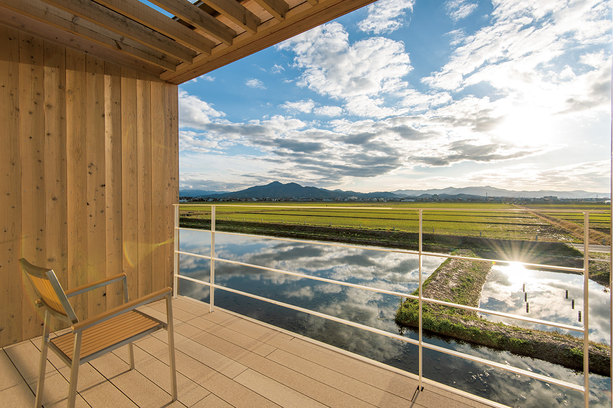
На окраине Цуруоки, среди рисовых полей равнины Сёнай, стоит длинный низкий отель, который словно парит над водой. Его построил Сигэру Бан, а затеяла местная компания, которая хочет менять жизнь своего края.
Место
Отель посреди рисовых полей
Цуруока лежит на равнине Сёнай, у побережья Японского моря на западе префектуры Ямагата. Местные жители с улыбкой называют свою окраину «местом, где ничего нет»: вокруг только рисовые поля и широкое небо. Здесь город построил научный парк, и в нём работают молодые биотехнологические компании.
Рядом с научным парком, так, чтобы не спорить с полями вокруг, стоит отель SHONAI HOTEL SUIDEN TERRASSE. «Суйдэн» по-японски значит «рисовое поле». Торжественное открытие прошло 19 сентября 2018 года.
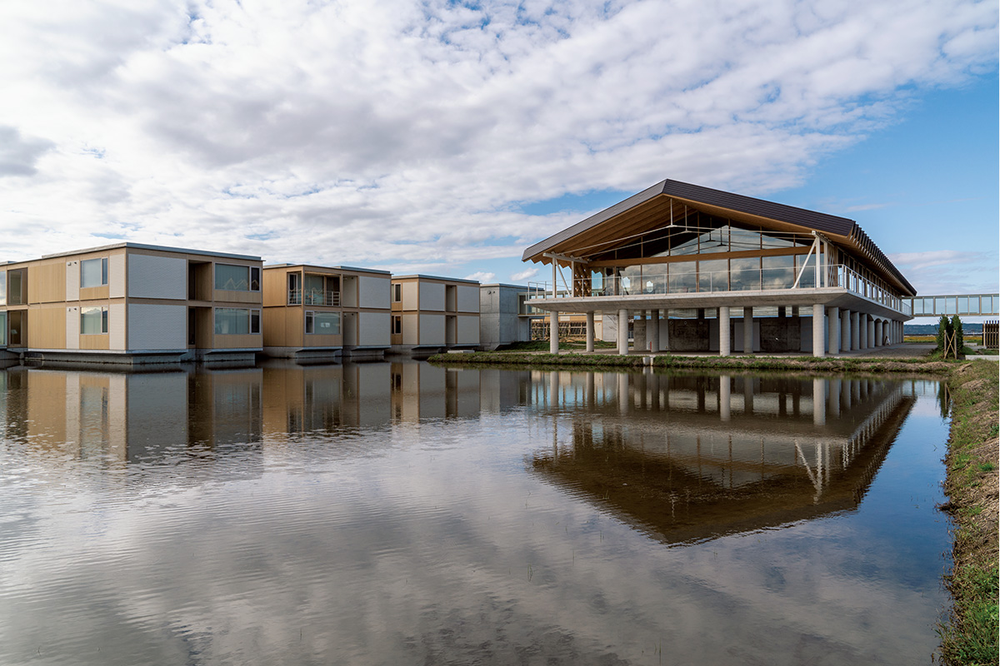
Отель построила компания «Ямагата Дизайн», которая занимается развитием территории. Её создали в самом Сёнае, чтобы проектировать и строить город, который можно оставить следующим поколениям, а отель стал одним из её проектов.
Даже логотип отеля, сквозь который будто просвечивают поля и небо Цуруоки, задуман как часть этой истории. Его автор объяснял, что представлял себе здание среди колосьев, которые к уборке урожая сверкают золотом, и людей, которые собираются здесь, чтобы порадоваться урожаю.
Архитектура
Работа Сигэру Бана
Бан проектировал отель так, чтобы он растворился в пейзаже рисовых полей. Небо, поля и водное зеркало из подземной воды вокруг здания складываются в одну картину, и она одинаково эффектна вблизи и издалека.
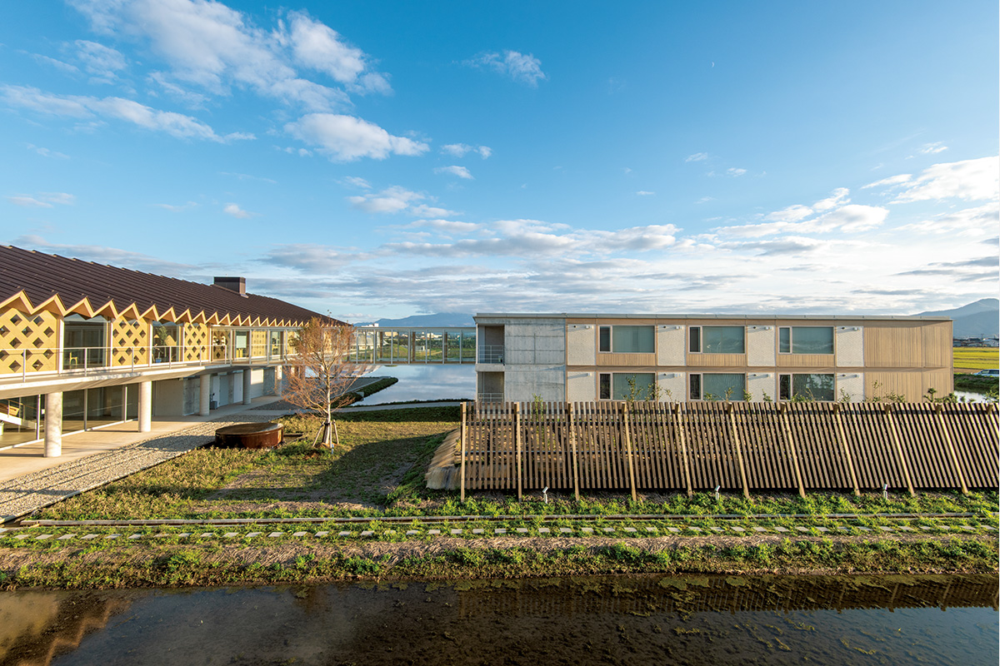
Общий корпус вытянут в длину и поднимается лишь на два этажа: в городе такую роскошь пространства не встретишь. Из входа гости поднимаются на второй этаж, где в центре стоит стойка регистрации. По одну сторону от неё библиотека и магазин, по другую ресторан и бар с панорамным остеклением.
Жилые корпуса, кроме фундамента, деревянные. Повсюду в интерьере встречаются бумажные трубы, фирменный приём Бана: из них сделаны стулья, скамьи, изголовья кроватей и другая мебель.
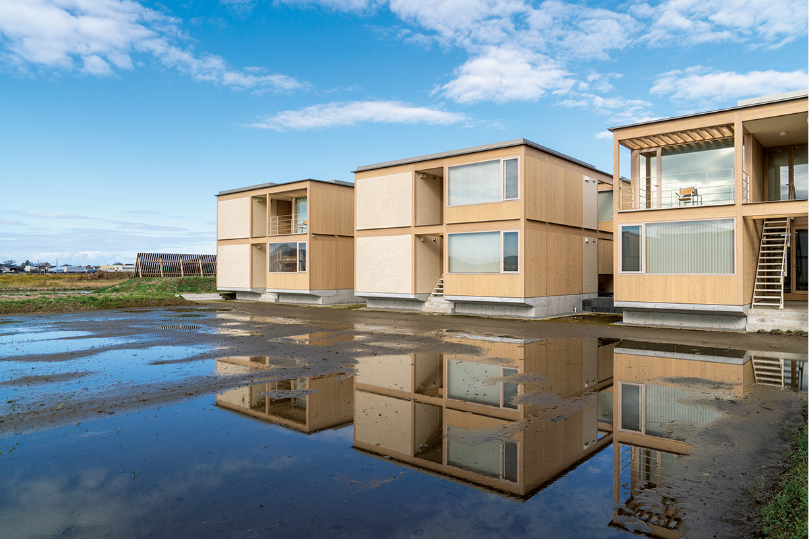
Номера
От люкса до общей комнаты
В отеле 143 номера семи типов: от люкса до групповой комнаты с кроватями, как в общежитии. В люксе площадью 65 кв. м есть гостиная и спальня, изголовье кровати и стулья сделаны из бумажных труб. Лампа в нём тоже особенная: это знаменитый светильник «Талиесин 2» Фрэнка Ллойда Райта, который Бан воссоздал из бумажных труб. Фрэнк Ллойд Райт (1867–1959) был американским архитектором, одним из самых влиятельных в XX веке; в Японии он построил отель «Империал» в Токио.
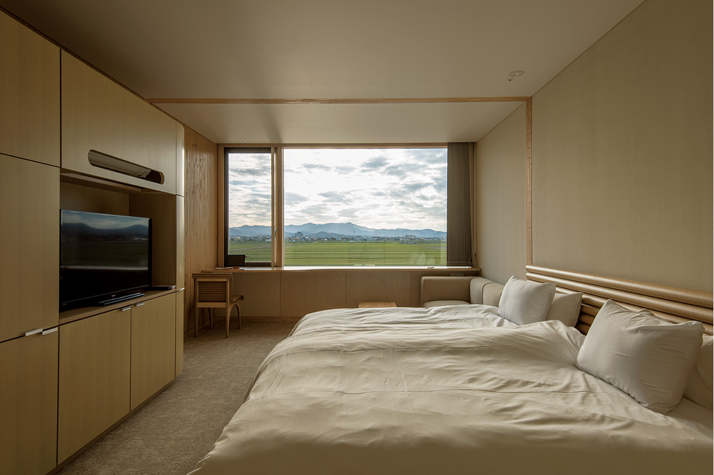
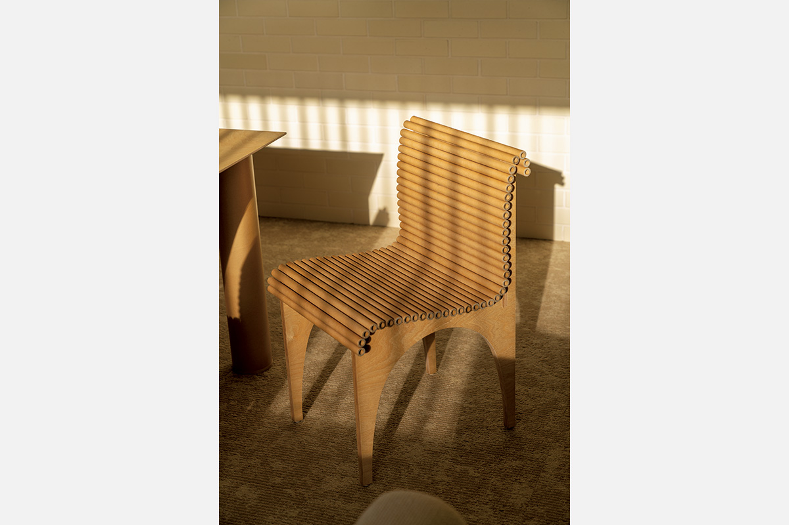
Для гостей приготовлены хлопковая одежда для номера с логотипом отеля, свободного покроя, в которой удобно и спать, а также косметика из биоразлагаемых компонентов: средства для лица, волос и тела.
Отдых
Библиотека, онсэн и детский купол
В библиотеке около 1000 книг. На задней обложке каждой наклеена фраза: «Взрослые тоже дети, и дети тоже взрослые».
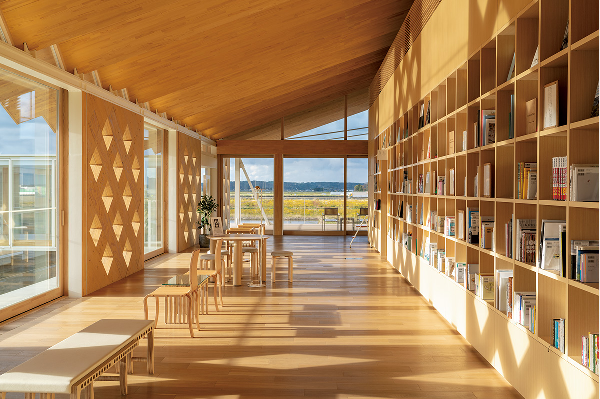
Гордость отеля это большие мужская и женская купальни с природным онсэном. Вода поднимается с глубины 1200 метров и течёт в купальни прямо из источника, без повторного использования. Женская купальня чуть меньше мужской, у неё плавные формы и пастельные тона. Купальни и спортзал этажом ниже открыты только для гостей отеля и членов спа-клуба.
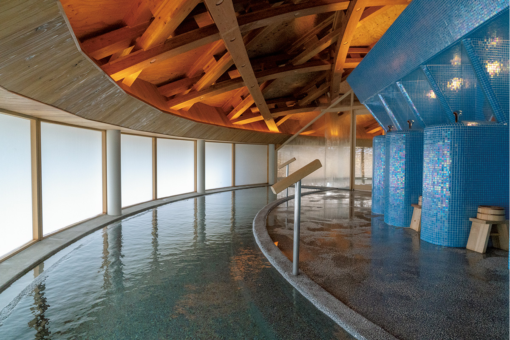
Рядом с отелем стоит KIDS DOME SORAI, крытый детский центр, который тоже спроектировал Бан. Под деревянным куполом есть склон длиной 45 метров, стена для лазания высотой 3 метра и сетчатые джунгли. Дети от 0 до 12 лет играют здесь вместе с родителями в любую погоду, а этажом ниже устроено пространство для мастер-классов.
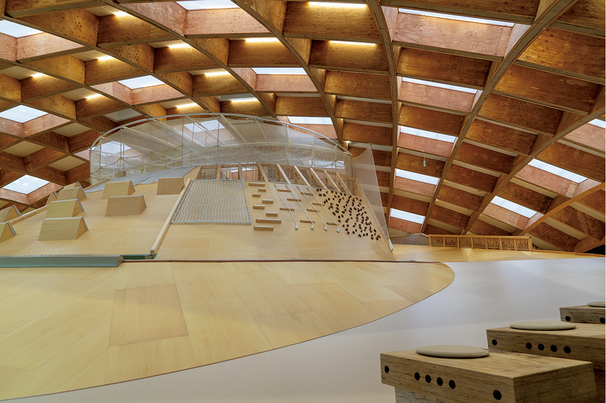
В магазине отеля собраны хорошие вещи из Ямагаты. Главное в нём это «взрослые сувениры Ямагаты и Сёная»: местное сакэ, работы и изделия здешних мастеров.
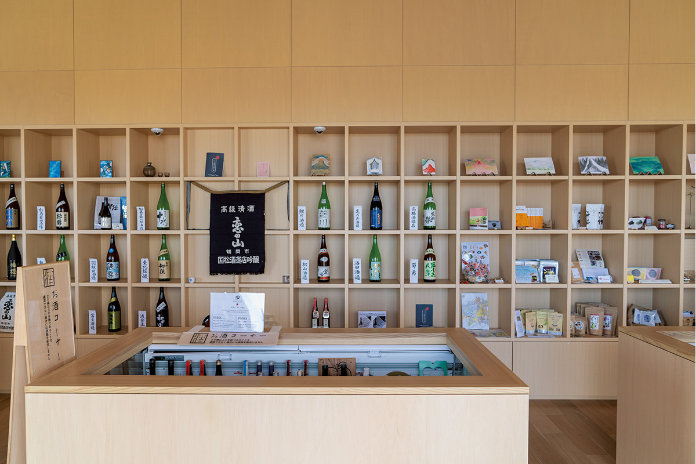
Кухня
Сёнай на тарелке
Ресторан подаёт японские и итальянские ужины из продуктов Сёная. В 2018 году на заказ от четырёх человек готовили сезонный сет «камо-сябу» с уткой барбари, которую растят в Сёнае: салат из местных овощей, закуска из свежей рыбы, утка и овощи, которые сам окунаешь в кипящий бульон, в конце рисовая каша на этом бульоне и десерт. Сет стоил 4000 иен с человека.
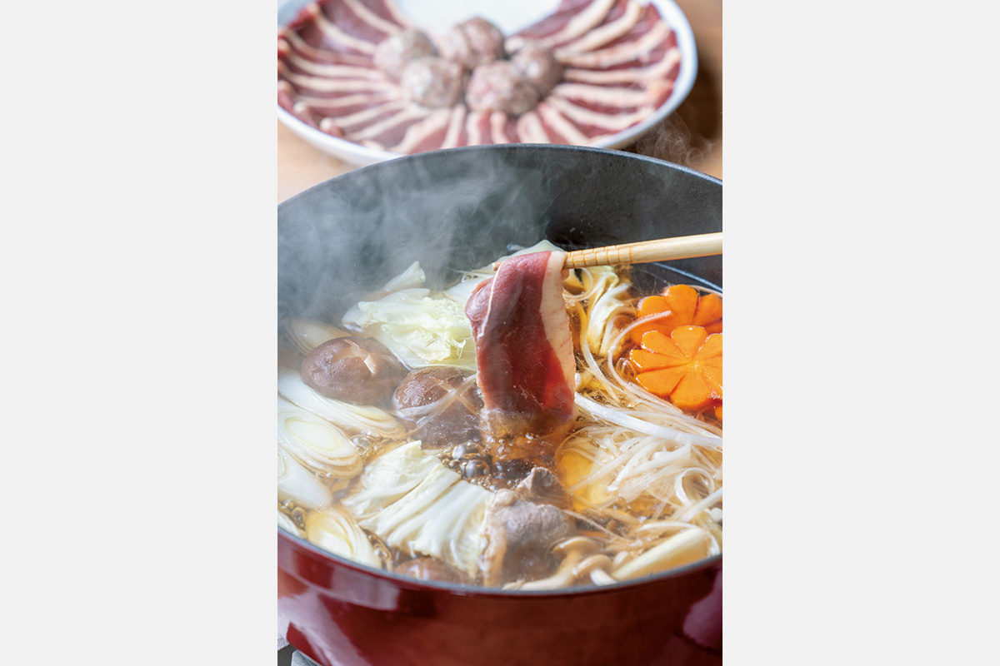
В меню были и блюда к вину: тальята из мягкой говядины Ямагаты, которую жарят куском и только потом нарезают (1800 иен в 2018 году), сыры с фермы в Дзао с ветчиной из свинины Сёная (1200 иен) и карпаччо из местной рыбы (800 иен). К ним можно взять сет местного сакэ из трёх сортов (1500 иен в 2018 году) или вино винодельческих хозяйств Ямагаты.
У кухни Сёная свой календарь. Весной здесь едят молодые побеги бамбука, горные травы, спаржу, кальмаров и вишнёвого лосося, летом баклажаны, соевые бобы «дадатя-мамэ», морские ушки и устриц, осенью батат, груши «ла франс» и рыбу хатахата, зимой редьку, таро и зимнюю треску.
Завтрак накрывают шведским столом, и утреннее солнце заливает зал. На столах салаты с собственной фермы и местные продукты: рис сорта сасанисики, курица на травах, солёное натто, яйца онсэн-тамаго, рыба хатахата, сосиски из свинины Сёная и соленья, которыми гордится Тохоку.
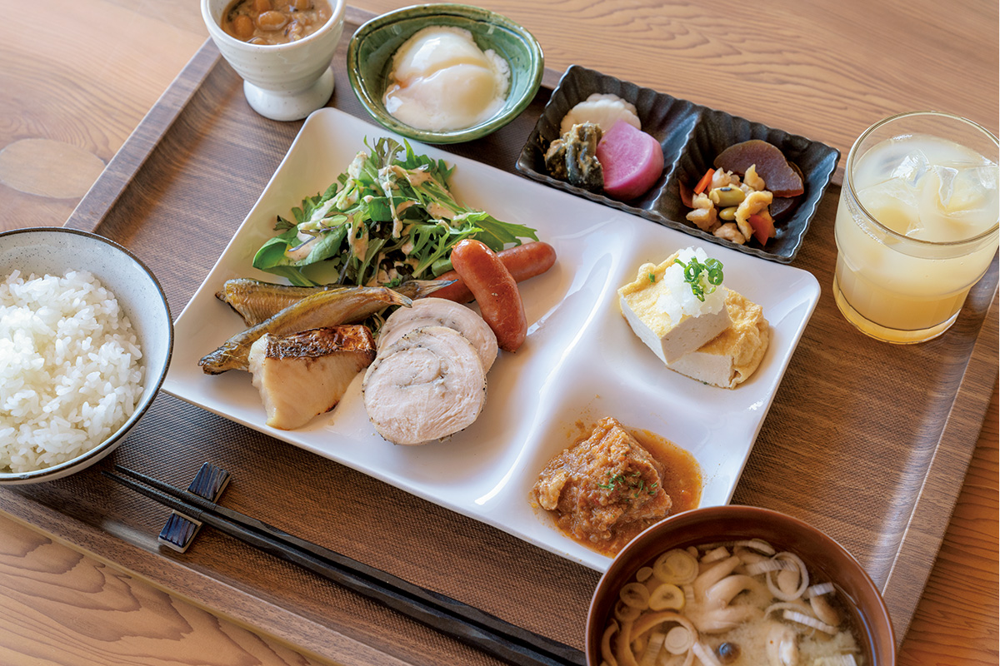
Компания
Ферма и будущее Сёная
На вопрос, почему Цуруока и почему посреди рисовых полей, глава «Ямагата Дизайн» рассказывает о цепочке случайностей, которые привели его сюда.
«Я хотел построить место, после которого многие станут поклонниками Сёная. Я нашёл дело, которому готов отдать жизнь»
глава компании «Ямагата Дизайн»
Особенно много сил он вкладывает в сельское хозяйство. В нескольких минутах езды от отеля у компании есть 12 теплиц, где команда вместе со специалистами-аграриями выращивает овощи без пестицидов и химических удобрений, на почве, которую готовят сами из того, что даёт местная природа. Овощи с этой фермы попадают и на стол отеля.
«Мы хотим сделать сельское хозяйство ещё привлекательнее и вырастить молодых людей, которые будут связывать с ним свои мечты»
глава компании «Ямагата Дизайн»
После двух дней в отеле журналистка, которая много лет пишет об отелях мира, увидела в этом проекте надёжную основу для будущего Японии.
Для тех, кто приедет в Цуруоку не только ради отеля: о старых закусочных с китайской лапшой в городе читайте в статье Тюка-соба в закусочных Цуруоки.
SHONAI HOTEL SUIDEN TERRASSE
- Адрес
- префектура Ямагата, Цуруока, Китакёдэн, Симо-Тори-но-су, 23-1
- Телефон
- +81 50-1745-9721 (10:00–22:00)
- Цены / Вход
- номер от 9000 до 40 000 иен без налога, групповая комната 4000 иен
- Номера
- 143
- Заезд / выезд
- заезд 15:30–24:00, выезд 5:00–10:00
- Как добраться
- на машине около 10 минут от развязки Цуруока скоростной дороги Ямагата; от станции JR Цуруока около 10 минут на такси; из аэропорта Сёнай около 20 минут на автобусе до остановки «Научный парк»
Фото: Ацуси Ямахира.